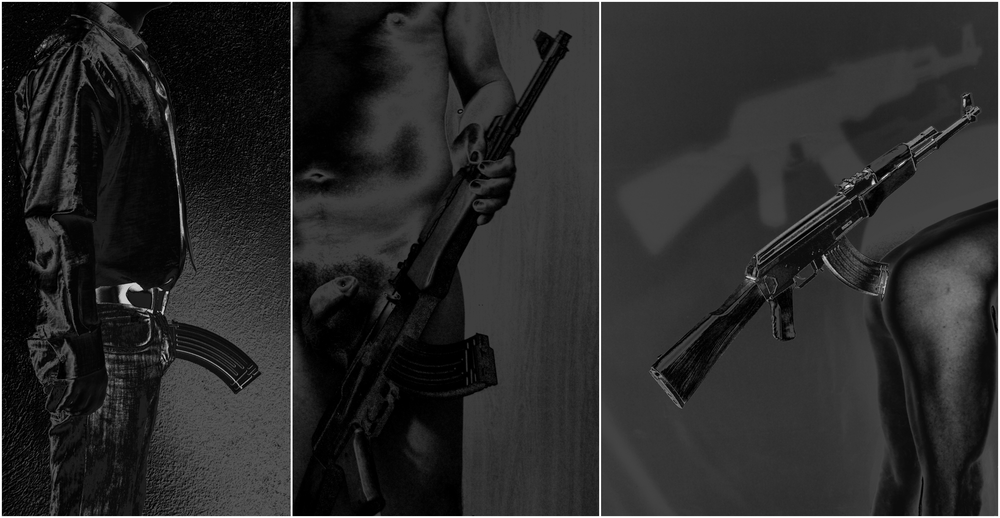

[fotoperformance] (2012-2016-2018)

A la sèrie ak treballava amb armes d'assalt per la seva potència simbòlica -símbols ambigus, sobre la vida i la mort, però també símbols de llibertat- i com a objectes tangibles de poder.
A Power on you trasllado les armes, en aquest cas símbol extern del poder, al meu propi cos, per resignificar el cos com a objecte i subjecte de poder i alhora objecte i subjecte de dominació, en definitiva, en un camp de lluita política.